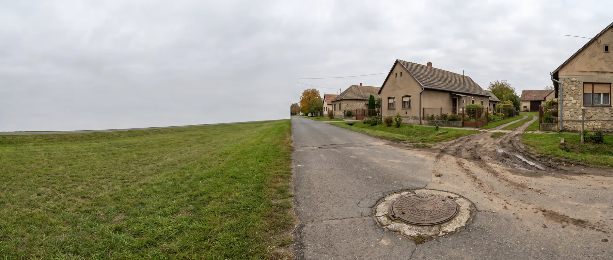

Nincs elérhető közcsatorna
Magyarországon a lakott ingatlanok egy részénél nincs és belátható időn belül nem is lesz közcsatorna. Ilyenkor a szennyvizet a telken belül kell megoldani — de nem mindegy, hogyan. Ez az oldal végigveszi, mely megoldások jöhetnek szóba, melyik mikor esik ki, és mit kell hozzá tisztázni.

Lehetőségek
Milyen megoldási lehetőségek vannak?
Négy irány létezik. A választást nem az ár dönti el elsőként, hanem az, hogy hová kerülhet a kezelt víz, és mit enged a helyi szabályozás.
-
Biológiai szennyvíztisztító berendezés. A szennyvizet a telken belül megtisztítja, a kezelt víz szikkasztható vagy — a feltételek teljesülése esetén — hasznosítható. Állandó lakhatásnál ez a leggyakoribb megoldás. Áram kell hozzá, és rendszeres, de kis munkaigényű üzemeltetést igényel.
-
Oldómedencés rendszer szikkasztással. Egyszerűbb, áramigény nélküli megoldás. Csak ott működik, ahol a talaj vízáteresztő képessége megfelelő és a talajvízszint elég mély — és a szikkasztómező területigénye is jelentős.
-
Zárt szennyvíztároló. Nem kezel, csak gyűjt: a szennyvizet rendszeresen el kell szállíttatni. Ott van a helye, ahol a helyi adottságok semmilyen talajba jutást nem engednek. Ezt a megoldást nem mi gyártjuk, de megmondjuk, ha ez a helyzet.
-
A közcsatorna kivárása. Ha az önkormányzatnak konkrét, ütemezett fejlesztési terve van, és a bekötés belátható időn belül elérhető, érdemes lehet átmeneti megoldással kivárni. Ígéret és ütemterv azonban nem ugyanaz.
Összevetés
Közcsatorna vagy egyedi rendszer?
Az egyedi rendszer felé billen, ha…
- nincs konkrét fejlesztési ütemterv — az önkormányzat nem tud kötelező érvényű időpontot mondani;
- a bekötési pont messze van, és a telken belüli vezetékszakasz költsége önmagában jelentős;
- a telek alkalmas a kezelt víz elhelyezésére, tehát a rendszer a telken belül lezárható;
- hosszú távra tervez: a rendszer élettartama alatt a szolgáltatási díj is elmarad.
A közcsatorna felé billen, ha…
- a hálózat épül, és a bekötés dátuma ismert — ilyenkor egy párhuzamos beruházás nehezen indokolható;
- a telek nem enged talajba jutást, és a kezelt víznek nincs más elhelyezési módja;
- a telekhatár közvetlen közelében van a gerincvezeték, tehát a bekötés műszakilag egyszerű;
- az ingatlant rövid távon értékesítenék — ott a közműrákötés önmagában is érték.
Előkészítés
Milyen adatokat kell először összegyűjteni?
Ezekkel a válaszokkal már meg tudjuk mondani, mely megoldások jönnek szóba, és melyik esik ki — mindezt helyszíni kiszállás előtt.
-
Az ingatlan pontos helye és a helyi szabályozás. A település neve és a helyrajzi szám elég ahhoz, hogy kiderüljön, vonatkozik-e a területre vízbázisvédelmi vagy más korlátozás.
-
A használat módja és a létszám. Állandó lakhatás vagy időszakos használat, hány fő, és van-e a terhelésben kiszámítható csúcs (például hétvégi vendégek).
-
A telek adottságai. Terület, lejtésviszonyok, a beépített rész elhelyezkedése, és hogy hol van szabad, gépjárművel megközelíthető felület a berendezésnek.
-
Talaj és talajvíz. Ha van korábbi talajmechanikai szakvélemény vagy fúrt kút adatlapja, az sokat segít. Ha nincs, a szomszédos ingatlanok tapasztalata is támpont.
-
A kezelt víz tervezett sorsa. Van-e a közelben felszíni befogadó (árok, patak), tervez-e öntözési hasznosítást, és hol vannak a környező ásott vagy fúrt kutak.
Buktatók
Tipikus hibák ebben a helyzetben
-
A berendezés kiválasztása a telek vizsgálata előtt. A leggyakoribb sorrendi hiba. Egy jó berendezés is működésképtelen, ha a kezelt vizet nincs hová elhelyezni.
-
Ígéretre alapozott várakozás. „Néhány éven belül kiépül" — ütemterv és forrás nélkül ez nem tervezhető adat. Közben a szippantási költség folyamatosan fut.
-
A szomszédos kutak figyelmen kívül hagyása. A védőtávolságok nemcsak a saját, hanem a szomszédos ingatlanok vízkivételi helyeire is vonatkoznak.
-
Csak a beruházási költség számolása. A teljes kép az üzemeltetéssel együtt áll össze: áramfogyasztás, iszapelszállítás, karbantartás — ezek nélkül a megoldások nem hasonlíthatók össze.
Gyakori kérdések
Amit a leggyakrabban kérdeznek
Kötelező rákötni a közcsatornára, ha kiépül?
A rákötési kötelezettség és annak határideje helyi rendelet kérdése, és településenként eltér. Ezt az illetékes önkormányzatnál vagy a szolgáltatónál érdemes tisztázni még a beruházás megkezdése előtt, mert befolyásolja a megtérülési számítást.
Mennyi ideig tart egy egyedi rendszer telepítése?
A telepítés maga rendszerint néhány nap, de a teljes átfutást az engedélyezés és a földmunka határozza meg. A reális ütemtervet a felmérés után tudjuk megadni, mert a bekötés mélysége és a talajviszonyok jelentősen befolyásolják.
Mi történik, ha később mégis kiépül a csatorna?
A telepített rendszer nem válik értéktelenné: a kezelt víz hasznosítása és az elmaradó szolgáltatási díj továbbra is előny lehet. A rákötés és a meglévő rendszer sorsa azonban helyi szabályozás kérdése, ezért ezt előre érdemes tisztázni.